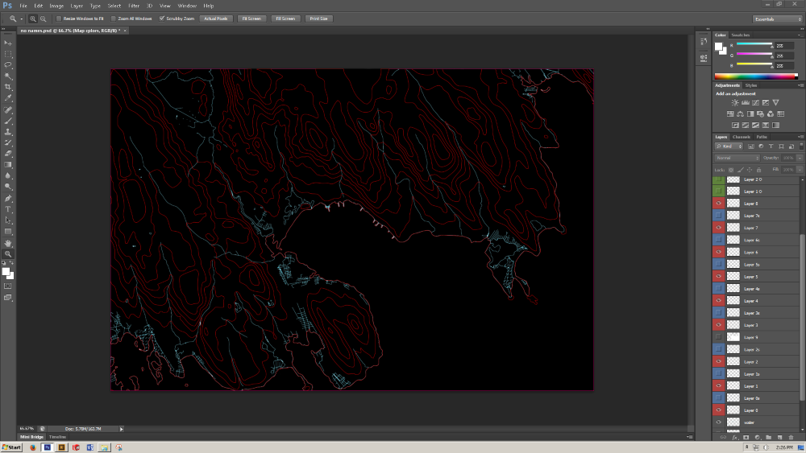
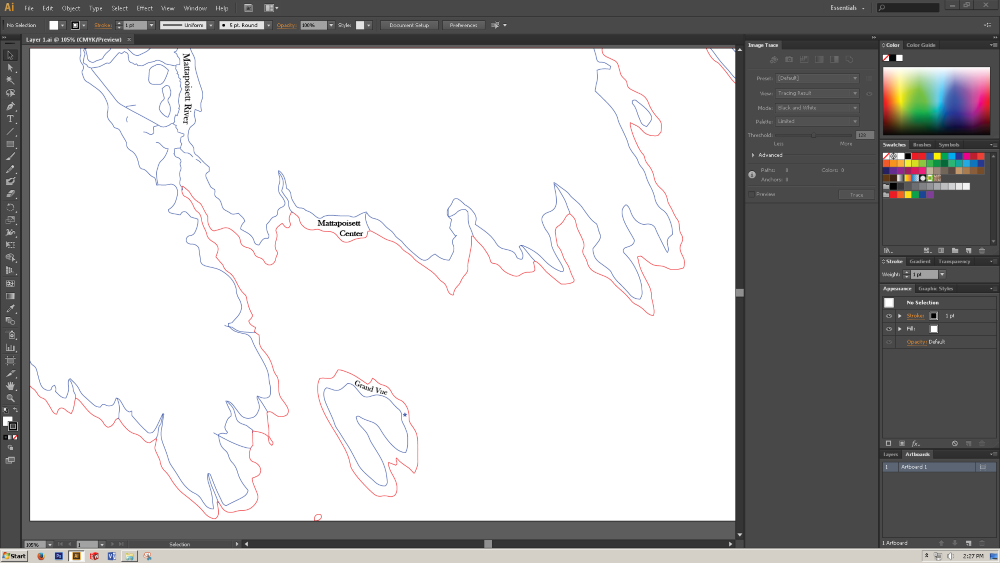
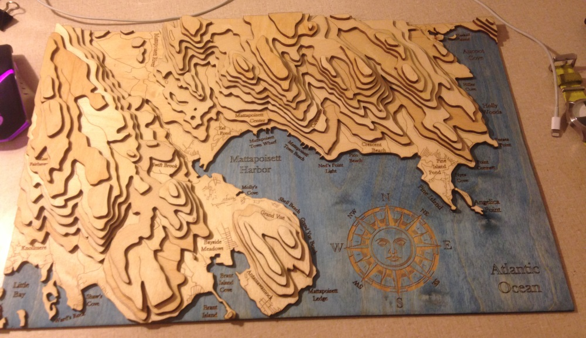

This project was a gift. I’ve been wanting to build a map like this for a long time; it must have been the first thing I thought of when I learned about laser cutting. I finally had an excuse to spend an unwise amount of time on it in the middle of the semester, so here’s the process.
The map is cut out of birch plywood and finished with tung oil. There’s a water based stain on the ocean layer, and all of the type is in Baskerville Old face. The compass was designed by my sister.
I started with a PDF of the USGS Marion Quadrangle map.
Then, in Photoshop, I separated every layer on the map and made a 1 px trace of the contour line (in red). All of the hydrography is also a 1 px trace shown in blue.
I then used the live trace function in Illustrator to go from a raster image to a vector image. Laser cutters can only cut in vector paths; it wouldn't make sense to try making G-Code out of a regular image. If I were to try sending an image to the laser machine, it would do what's called a raster pass. The head would work its way down the wood going back and forth, turning on the laser wherever it detects a pixel. This is similar to how a regular printer works. What I want, however, is for the laser head to follow the path of the contour lines while continuously cutting. There's a cool analog here to how CRT and CVT displays could work in either raster or vector. The tv could either draw shapes on the screen with its electron beam (vector) or it could go back and forth across the whole screen illuminating individual pixels (raster). The difference between a raster image and a vector image is important to understand if you're trying to do laser cutting.
This is also where I added all of the text. You'll notice that the compass isn't on this file. That was centered on top of the map manually with the laser cutter as its own file because mixing raster and vector is not very pleasant in AutoCad.
To get the vector image to a format the laser software can read (.dwg) I had to go from Visio to AutoCad. This was a pain. Once I got cutable files I decided to do a scaled down test in MDF because it's cheap. Good thing I tested it too because there were a lot of problems I had to resolve. Several of the lines didn't end up cutting. I never quite figured out what the problem was, but I think it could have been one of two things. One possibility is that there were so many complex lines that the laser cutter couldn't handle it. I had every piece of the map on one sheet because it was scaled down. Another possibility is that the laser cutter was having trouble with the file mixing closed and open contours. It seemed like all of the lines that didn't cut were open contours, and all of the lines that did cut were closed. I have no idea why this would be a problem.
Sand the wood before etching. I hadn't thought of this ahead of time so in between sanding and finishing with tung oil, I had to go through every line with a little brush and a tack cloth to clear out the sawdust.
Here I was getting a few pieces cut every day. The whole project was getting harder and harder to hide in my dorm room. I was starting to glue the pieces together using binder clips as clamps.
Staining went very well. I was so worried about how I was going to keep the stain out of the compass because I wanted to preserve the contrast. I spent a few days worrying about it when I finally just did it, and it magically worked out exactly how I wanted. This was very exciting.
All done. phew.
This project took quite a long time but it was very rewarding. Most of my time was spent trying to figure out how to go from an image to a file I could laser cut. I had been thinking of this as a barrier for other projects, but now that I can do it I have a lot of new ideas. It took about two months and had a lot of very frustrating periods. It's a good thing that I made it as a gift because if it were for myself I would have given up in the first week. I'm pleased with the result, but there are two errors in the final product that I'll take with me to the grave.